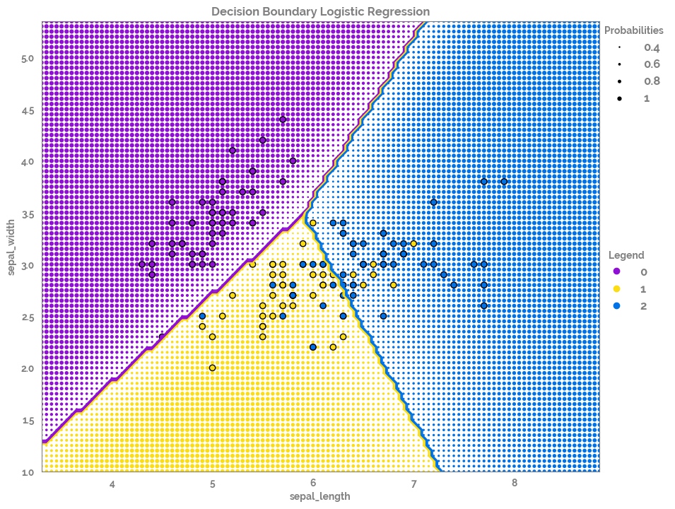
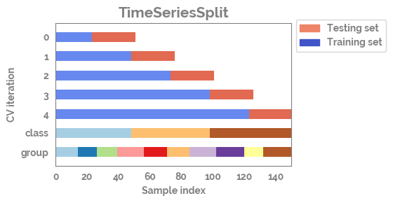
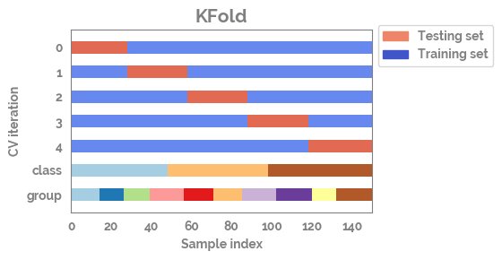
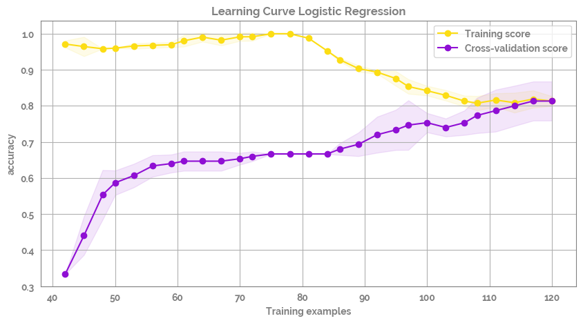
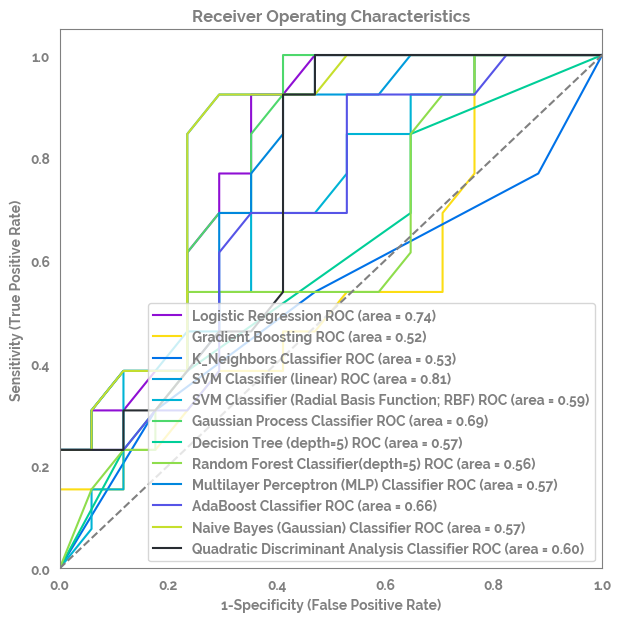
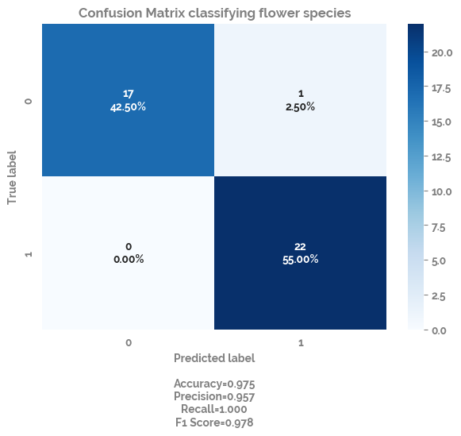

Using ml_utils functions from the jmspack package¶
Showing the usage of the following ml_utils functions¶
silence_stdout()
plot_decision_boundary()
plot_cv_indices()
plot_learning_curve()
dict_of_models
multi_roc_auc_plot()
optimize_model()
plot_confusion_matrix()
summary_performance_metrics_classification()
[1]:
import os
tmp = os.getcwd()
os.chdir(tmp.split("jmspack")[0] + "jmspack")
[2]:
import numpy as np
import pandas as pd
import matplotlib.pyplot as plt
import seaborn as sns
from jmspack.ml_utils import (
plot_decision_boundary,
plot_cv_indices,
plot_learning_curve,
dict_of_models,
multi_roc_auc_plot,
optimize_model,
plot_confusion_matrix,
summary_performance_metrics_classification
)
from jmspack.utils import JmsColors
from sklearn.model_selection import (
TimeSeriesSplit,
KFold,
ShuffleSplit,
StratifiedKFold,
GroupShuffleSplit,
GroupKFold,
StratifiedShuffleSplit
)
[3]:
from sklearn.linear_model import LogisticRegression
from sklearn.metrics import confusion_matrix
[4]:
os.chdir(tmp)
[5]:
if "jms_style_sheet" in plt.style.available:
_ = plt.style.use("jms_style_sheet")
[6]:
df = sns.load_dataset("iris")
plot_decision_boundary¶
[7]:
feature_list = df.columns.tolist()[0:2]
target = "species"
X = df[feature_list]
y = df[target]
[8]:
fig, ax = plot_decision_boundary(X=X, y=y)

plot_cv_indices¶
[9]:
n_points = X.shape[0]
n_splits = 5
uneven_groups = np.sort(np.random.randint(0, 10, n_points))
[10]:
cvs = [TimeSeriesSplit,
KFold,
ShuffleSplit,
StratifiedKFold,
GroupShuffleSplit,
GroupKFold,
StratifiedShuffleSplit]
[11]:
for cv in cvs[0:2]:
fig, ax = plot_cv_indices(cv(n_splits), X, y.astype("category").cat.codes, uneven_groups, n_splits)


plot_learning_curve¶
[12]:
fig, ax = plot_learning_curve(X=X, y=y.astype("category").cat.codes)

dict_of_models¶
[13]:
dict_of_models
[13]:
[{'label': 'Logistic Regression', 'model': LogisticRegression()},
{'label': 'Gradient Boosting', 'model': GradientBoostingClassifier()},
{'label': 'K_Neighbors Classifier',
'model': KNeighborsClassifier(n_neighbors=3)},
{'label': 'SVM Classifier (linear)',
'model': SVC(C=0.025, kernel='linear', probability=True)},
{'label': 'SVM Classifier (Radial Basis Function; RBF)',
'model': SVC(C=1, gamma=2, probability=True)},
{'label': 'Gaussian Process Classifier',
'model': GaussianProcessClassifier(kernel=1**2 * RBF(length_scale=1))},
{'label': 'Decision Tree (depth=5)',
'model': DecisionTreeClassifier(max_depth=5)},
{'label': 'Random Forest Classifier(depth=5)',
'model': RandomForestClassifier(max_depth=5, max_features=1, n_estimators=10)},
{'label': 'Multilayer Perceptron (MLP) Classifier',
'model': MLPClassifier(alpha=1, max_iter=1000)},
{'label': 'AdaBoost Classifier', 'model': AdaBoostClassifier()},
{'label': 'Naive Bayes (Gaussian) Classifier', 'model': GaussianNB()},
{'label': 'Quadratic Discriminant Analysis Classifier',
'model': QuadraticDiscriminantAnalysis()}]
multi_roc_auc_plot¶
[14]:
X = df.loc[df[target].isin(df[target].unique().tolist()[1:3]), feature_list]
y = df.loc[df[target].isin(df[target].unique().tolist()[1:3]), target]
[15]:
fig, ax = multi_roc_auc_plot(X=X, y=y.astype("category").cat.codes)

optimize_model¶
[16]:
feature_list = df.columns.tolist()[0:4]
X = df.loc[df[target].isin(df[target].unique().tolist()[1:3]), feature_list]
y = df.loc[df[target].isin(df[target].unique().tolist()[1:3]), target].astype("category").cat.codes
[17]:
(optimized_estimator,
feature_ranking,
feature_selected,
feature_importance,
optimal_params
) = optimize_model(X=X, y=y)
Fitting estimator with 4 features.
Fitting estimator with 3 features.
- Sizes :
- X shape = (100, 4)
- y shape = (100,)
- X_train shape = (70, 4)
- X_test shape = (30, 4)
- y_train shape = (70,)
- y_test shape = (30,)
- Model info :
- Optimal Parameters = {'bootstrap': True, 'ccp_alpha': 0.0, 'class_weight': None, 'criterion': 'gini', 'max_depth': 1, 'max_features': 'log2', 'max_leaf_nodes': None, 'max_samples': None, 'min_impurity_decrease': 0.0, 'min_samples_leaf': 1, 'min_samples_split': 2, 'min_weight_fraction_leaf': 0.0, 'n_estimators': 40, 'n_jobs': None, 'oob_score': False, 'random_state': None, 'verbose': 0, 'warm_start': False}
- Selected feature list = ['sepal_length', 'petal_length']
- Accuracy score on test set = 86.7%
[18]:
optimal_params
[18]:
| bootstrap | ccp_alpha | class_weight | criterion | max_depth | max_features | max_leaf_nodes | max_samples | min_impurity_decrease | min_samples_leaf | min_samples_split | min_weight_fraction_leaf | n_estimators | n_jobs | oob_score | random_state | verbose | warm_start | |
|---|---|---|---|---|---|---|---|---|---|---|---|---|---|---|---|---|---|---|
| optimal_parameters | True | 0.0 | None | gini | 1 | log2 | None | None | 0.0 | 1 | 2 | 0.0 | 40 | None | False | None | 0 | False |
plot_confusion_matrix¶
[19]:
clf = LogisticRegression()
X = df.loc[df[target].isin(df[target].unique().tolist()[1:3]), feature_list]
y = df.loc[df[target].isin(df[target].unique().tolist()[1:3]), target].astype("category").cat.codes
train_set_percentage = 0.6
train_X = X.sample(frac=train_set_percentage, random_state=69420)
train_y = y.loc[train_X.index]
test_X = X.drop(train_X.index, axis=0)
test_y = y.drop(train_X.index, axis=0)
[20]:
_ = clf.fit(X = train_X,
y = train_y)
pred_y = clf.predict(test_X)
cf_matrix = confusion_matrix(test_y, pred_y)
fig, ax = plot_confusion_matrix(cf=cf_matrix, title="Confusion Matrix classifying flower species")

summary_performance_metrics_classification¶
[21]:
metrics_df = summary_performance_metrics_classification(model=clf, X_test=test_X, y_true=test_y)
metrics_df
[21]:
| TN | FP | FN | TP | Accuracy | Balanced Accuracy | Prevalence | Sensitivity | Specificity | PPV | NPV | auc | Mean AUC (CI 5%-95%) | F1 | |
|---|---|---|---|---|---|---|---|---|---|---|---|---|---|---|
| scores | 17 | 1 | 0 | 22 | 0.975 | 0.972 | 0.55 | 1.0 | 0.944 | 0.957 | 1.0 | 0.995 | 0.995 (95% CI 0.995-0.995) | 0.978 |